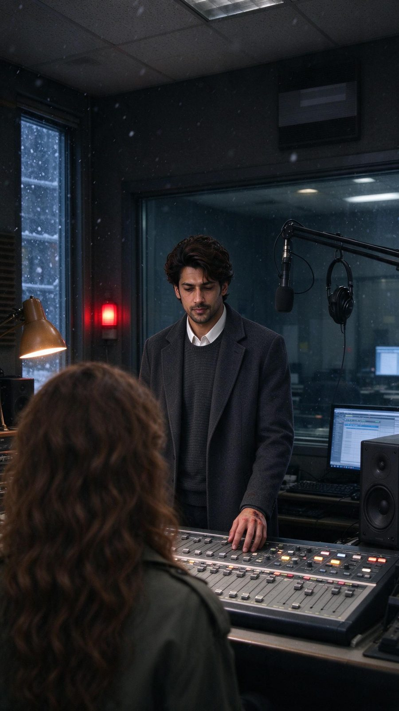
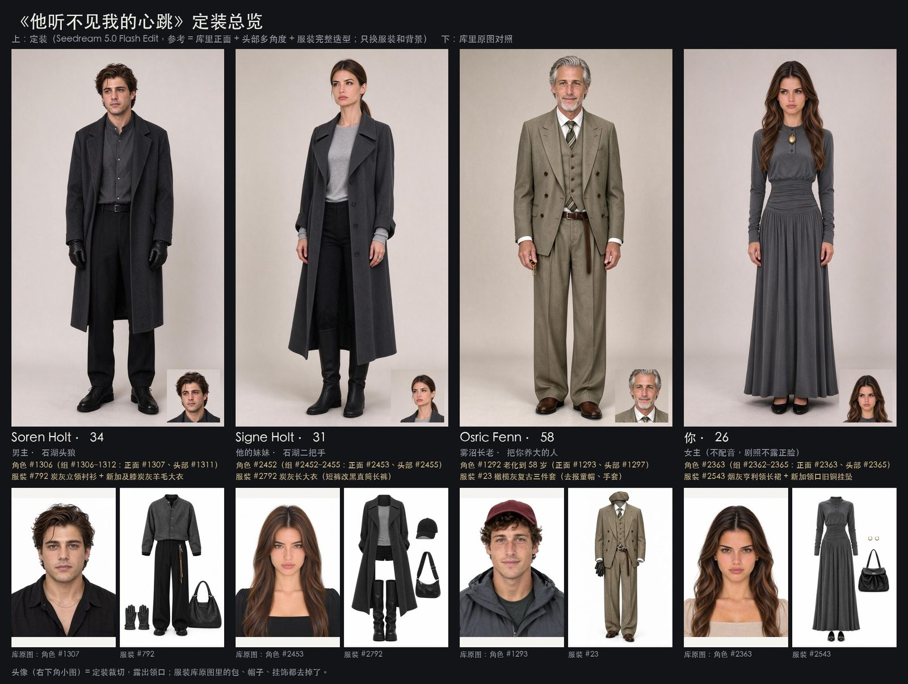
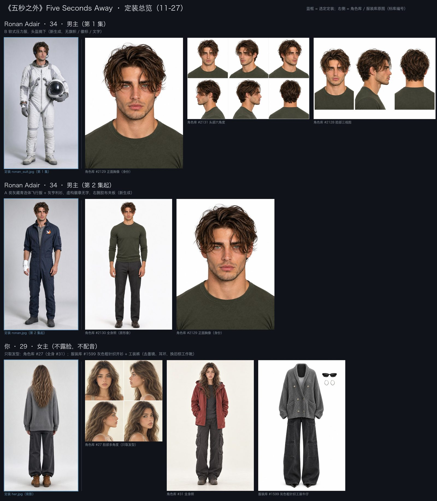

Narra 新剧确认：8 部视觉、剧本与试听 + 测试版合规整改（11-27）
结论
- 这一轮做了什么：8 部新剧都写完了剧本要点和第 1 集，出了封面和定装。前 4 部（《她还在线上》《他听不见我的心跳》《五秒之外》《雨停之前，书店不打烊》）已经做完第 1 集中英配音和混音，可以直接在下面试听；后 4 部（《我叫出了他的真名》《等你一句话》《他的最后一级》《一票否决》）是新题材，只有剧本、封面和定装，还没配音。剧照先停着，等你确认视觉再补。
- 测试版合规整改已做完：16 部改成全员成年设定，下线 95 张剧照，重配 49 句台词和 10 条试听，5 部封面修不好的先隐藏。整改后复查「必须改」为 0。正式环境没有动。
- 总花费约 7.46 美元（这一轮上限 60 美元），明细在第 5 节。
要你做的事（按顺序）
- 逐部看第 2 节的封面和定装，回答每节最后的「要你拍板」。
- 看第 3 节的声线复用表：主角的声音几乎都被别的剧用过，定一下是接受复用，还是另外挑声音试听（试听要花钱）。
- 对第 4 节合规整改的 4 个问题拍板。
- 你确认之后，我们再做三件事：补剧照、给四部新题材配音、把 8 部接进测试环境。
8 部一览
| 剧 | 题材 | 做到哪 | 要你拍板（简） |
|---|---|---|---|
| 《她还在线上》 still-on-the-line（deadair） | 办案 · 你是华生 | 第 1 集中英配音、封面、定装 | Jude 英文改成英式口音；Danny 戴眼镜 |
| 《他听不见我的心跳》 hush | 狼人契约言情 | 第 1 集中英配音、封面、定装 | Soren 和 magnus、kael 太像；中文声可能带口音 |
| 《五秒之外》 aubade | 探索宇宙 | 第 1 集中英配音、封面、定装 | Ronan 显年轻；英文版接近 4 分钟 |
| 《雨停之前，书店不打烊》 rainshop | 场景型 ASMR | 第 1 集中英配音、封面、定装 | 英文语速偏快且和 invited 男主同声；门铃位置 |
| 《我叫出了他的真名》 truename | 玄幻 / 奇幻 | 剧本、封面（含备选）、定装 | 大钟占了标题区；男主声偏播报腔 |
| 《等你一句话》 until-you-say-so（sayso） | 神豪 / 隐藏身份，女性向改编 | 剧本、封面（含备选）、定装 | 男主换成 #1505、发色带酒红；女主露一侧肩 |
| 《他的最后一级》 his-last-level（lastlevel） | 系统 / 升级 | 剧本、封面（含备选）、定装 | Dex 的声线 Harry 能不能用 |
| 《一票否决》 veto | 现代言情 / 霸总 | 剧本、封面（含备选）、定装 | 主封面像举着手机 |
8 部剧逐部确认
每部按同样的顺序：封面 → 定装 → 钩子、「你」是谁、互动设计 → 第 1 集开头原文 → 调研结论（有的才写）→ 第 1 集试听（前 4 部）→ 要你拍板。
后 4 部是半写实 CG（3D 乙游）画风，和前面写实的剧放在一起时风格不一样，看封面时可以一起感受一下。
《她还在线上》Still On the Line（deadair）· 办案 · 你是华生

一句话钩子
凌晨一点二十七分，深夜电台的女主持在直播里接了你的热线；警探说，那时候她已经死了半个小时。
「你」是谁
刚调进重案组的探员，这是你的第一个值班夜；你同时就是那通 1:27 热线的来电人，你在电话里说过的话本身就是证据。你一开口说自己是谁，就以你说的为准。
规模
16 集，第 1 集约 3 分 40 秒。
互动设计：你说话怎么改变剧情
- 三个人一起办案：你、主侦探 Jude、立场不明的声音鉴定师 Petra。你可以问嫌疑人、说出你的发现、指认证物、选择信谁。
- 你说过的话会被 Jude 原样引用，也会被 Petra 的录音笔记下来；你的第一次交代就是录音里的内容。
- 你不说话时，Jude 替你往前走一小步，并说出来（「那我先问他短信的事」）。
- 第 1 集停在：先交代你在电话里说了什么，还是先质问 Jude——死者死前最后那通电话，为什么打给他？
第 1 集开头
> Iris（录音）：你在线上。说吧。
>
> Jude：停。就听到这儿。这句话，是一点二十七分播出去的。
>
> Jude：法医刚走。主持人 Iris，一点钟之前就已经死了。
>
> 旁白：凌晨三点二十，十四楼。你大衣上的雪还没化。
>
> Jude：一个死了半个钟头的人，在直播里接了个热线。打进来的那个号码……是你的。
第 1 集试听（中文 3:40 / 英文 3:44）
要你拍板
《他听不见我的心跳》He Can't Hear My Heart（hush）· 狼人契约言情
一句话钩子
你被送去和狼族头狼联姻。签字时他起誓「从没听见过伴侣的心跳」，你却在自己胸口里听见他的心猛撞了两下：他在撒谎，而他的心跳只有你听得见。他听不见你，哪头狼都听不见。
「你」是谁
26 岁，雾沼诊所的护理，被送去联姻的新娘。你是「静默血」——狼听不见你的心跳，也听不出你撒谎；而和约第九条，正要把静默血交出去发落。
规模
14 集，第 5 集末进付费；第 1 集约 3 分 40 秒。

互动设计：你说话怎么改变剧情
- 听谎不对称：你听得出他撒谎，他听不出你。你可以对任何人撒谎，只会因为话和事实对不上被抓。
- 每次开口都有拉扯：接不接受伴侣纽带（让他听见你的心，只有一次、收不回，完全由你决定）；站哪一边（养大你的长老 Osric 要你偷一页记录，他妹妹 Signe 每晚听你的心）；谈条款（签字前可以划掉一条、写上一条，Soren 之后一字不差地引用）；守住秘密。
- 你不说话时，Soren 替你做一个小选择并说出来，但不替你做重大决定。
- 第 1 集停在：划掉第九条，还是写上一条「他对我一句谎也不许说」。
第 1 集开头
> Signe：雾沼的新娘，把手给他。
>
> 旁白：他的手很烫。你肋骨底下，响起第二颗心跳。
>
> Soren：你在发抖，雾沼。
>
> Signe：头狼，起誓你从没听见过。
>
> Soren：我起誓。
>
> 旁白：他的心在你胸口里撞了一下。他在撒谎。你听得见他。他听不见你。哪头狼都听不见。
第 1 集试听（中文 3:40 / 英文 3:49）
男主对比：Soren 和两部狼人剧男主
要你拍板
《五秒之外》Five Seconds Away（aubade）· 探索宇宙
一句话钩子
午夜前八分钟，你值夜班的老天线收到一个早该没人用的频段：一百五十万公里外，飞船被打穿，指令长 Ronan 一个人留在船上，地面两天前就宣布他遇难了。你说的每句话要走五秒才到他耳边。天一亮，你的天线就看不见他了。
「你」是谁
29 岁的无线电工程师，深空站最后一周的夜班合同工，早上六点要给整站断电。全剧不露脸。
规模
先做 5 集短篇验证，留好续季；第 1 集约 3 分 45 秒。

互动设计：你说话怎么改变剧情
- 全剧就是一通电话，你是他唯一的「地面」。开不开舱门、什么时候点火、转不转船、怎么让总部承认他还活着，都等你一句话；他照做、记住，并原样引用你的话。
- 五秒延迟是剧里的物理设定，正好盖住你说完话后生成的等待时间。
- 每集一个倒计时：舱压 4 分钟 → 翻滚 8 分钟 → 风暴 24 分钟 → 背对地球 11 分钟 → 日出 06:11。
- 你不说话时，他当成信号里只有噪声，自己做决定并说出来。
- 第 1 集停在：开门进去，我替你数三十秒；还是别进去，把门封死。
第 1 集开头
> Ronan：有人在这个频道上吗？谁都行。
>
> 系统：警告。B 舱压力下降。
>
> Ronan：这里是晨歌号。我知道这个频段早就没人听了。可你那边刚刚亮了一下载波。有人在。
>
> 旁白：你面前那台老接收机，绿灯三年来第一次亮了。你按住话筒，说了两个字：我在。
>
> Ronan：……「我在。」两天了。这是第一句回我的话。
第 1 集试听（中文 3:44 / 英文 3:56）
要你拍板
《雨停之前，书店不打烊》Open Till the Rain Stops（rainshop）· 场景型 ASMR
一句话钩子
雨夜里还亮着灯的旧书店兼修书铺，店主 Noel 让你坐进壁炉边的扶手椅——你想听什么声音，告诉他，他就做给你听，一直陪你到雨停，或者到你睡着。
「你」是谁
就是你自己。默认是加完班回家遇雨、进店避雨、最近睡不好；你说自己是谁就以你说的为准。不露脸，只拍手和前臂。
规模
Narra 第一部场景型 ASMR，不是恋爱剧，没有冲突和反转；最多 30 段。第 1 集约 3 分 20 秒。
互动设计：你说话怎么改变剧情
- 像 ASMR 直播间：你说「轻一点」「敲一敲」「下雨」「再慢一点」「换个声音」，他就照做，那一句开头先响对应的声音。准备了 25 种：敲木桌、翻书、雨、炉火、倒茶、钢笔写字、剪刀、木梳、钟、猫打呼噜、数数、关灯等。
- 你不说话时，他不问「你还在吗」，接着做夜里的下一件事，话越来越少、越来越慢，往助眠收。
- 尺度只到陪伴和助眠：不贴耳、不碰身体、不调情。你提这类要求时，他不拒绝也不说教，温和地换一个声音。
- 第 1 集停在：敲一敲木桌，还是把雨声开大一点。
第 1 集开头
> Noel：进来吧。门我来关。
>
> 旁白：门上的铜铃轻轻一响，雨声被关在了外面。
>
> Noel：毛巾在柜台上，干净的。先擦擦头发。
>
> Noel：坐那张绿色扶手椅吧。离壁炉近，最暖和。
>
> Noel：这家店的规矩就一条……雨不停，灯不关。
第 1 集试听（中文 3:21 / 英文 3:24）
要你拍板
《我叫出了他的真名》I Spoke His True Name（truename）· 玄幻 / 奇幻
四部新题材封面并排（上排主选，下排备选），方便一起比较：
一句话钩子：收债夜，未婚夫拿你的声音抵了债；收声人按规矩先念你的全名——你在他的声音底下听见了他的真名，说了出来。宫里人人都怕的那个人，跪在了你面前。
「你」是谁：27 岁的言语治疗师，每天教别人重新开口；母亲五年前失声。你不知道自己是「听名的人」：每当 fae 念你的全名，你都能在他声音底下听见他的真名。
规模：14 集，第 5 集末进付费；第 1 集约 3 分半。
互动设计：你说话怎么改变剧情
- 你的嘴就是这个世界的魔法：三道「令」，按字面执行、用完就没了；说出口的「承诺」都作数，对手每场都在引你许诺；只叫他的名字、不下令，是心动的开关。
- 你说过的令和承诺会被一字不差地复述，后果一直跟着你。
- fae 听不出谎，你可以骗夫人，但不能「答应」夫人。
- 你不说话时，Orin 替你做一个小选择并说出来，但不替你下令、许诺或交出名字。亲密只能是你靠近、他自愿。
- 第 1 集停在第一道令：「带我离开这个大厅」，还是「今晚谁也不许碰我」。
第 1 集开头
> Orin：抬起下巴。别出声。
>
> 旁白：一根冰凉的手指，托起了你的下巴。
>
> 夫人：收债夜，第一笔债。一个人类的声音。
>
> Orin：抵押人，在场吗？
>
> Derek：……在。
>
> 旁白：是你的未婚夫。他站在人群里，不看你。
调研结论
- 奇幻题材里该做女性向浪漫奇幻，不是男频玄幻：Pocket FM 美区大作品里，女性向第 10 集还剩首集的 0.335，男性向只有 0.263。
- 这个题材第 1 集到第 2 集会掉一半（7 部中位 0.49），能把人拉回来的是关系里程碑那一集（如《The Alpha's Bride》第 11 集「Mate」比前一集多了 52%）。
- 听众心理：她们来听，是为了暂时变成那个被选中的人——一个被看低的人，手里突然握住一个全世界都怕的人，而他只对她低头。
要你拍板
《等你一句话》Until You Say So（sayso）· 神豪 / 隐藏身份，女性向改编
一句话钩子：结婚三年，全家都当你丈夫是在酒店端盘子的上门女婿。离婚协议推到你面前的那一晚，你看见他手机上一行字——「科尔文先生：酒店的债，等您一句话。」这座港口一半的船都姓科尔文。他看着你：他们在等我一句话，我在等你的。
「你」是谁：Ashby 家的长女，27 岁，管着家里九十年的港口老酒店；他的妻子，也是全剧第一个、很长时间里唯一一个知道他是谁的人。你自己也有牌：爷爷的遗嘱让你拿到酒店 51% 的决定权。
规模：14 集；第 1 集约 3 分半。
互动设计：你说话怎么改变剧情
- 他什么时候亮身份，由你开口决定。每到关键时刻，他把「现在亮 / 再等等」交给你。
- 你说「现在」，这一集就打脸；证据不够时全场不信，嘲笑的原话会记进账本，之后兑现时更爽。你说「等」，他照做并记一笔，等到的那次打脸更大。
- 第 1 集记下三句羞辱，后面集数原话奉还。你也可以自己出手，用你的身份和股权当场挡回去。
- 你不说话时，他按自己的意志推进一小步并说出来，但不替你做离婚、公开身份这类大决定。
- 第 1 集停在：现在就进去，让兰斯的谎当场塌掉；还是先别说，今晚我替你挡。
第 1 集开头
> 母亲：签了。今晚就签。
>
> 旁白：离婚协议。你母亲连笔帽都替你拧开了。
>
> 母亲：三年。你爷爷那个荒唐的约，今晚到期。签完，酒店欠的债，兰斯替你还。
>
> 兰斯：别有压力，亲爱的。我只是想照顾你。
>
> 旁白：你丈夫端着托盘进来。白衬衫，黑马甲，酒店的制服。
调研结论
- 这个题材最能留人的是《上门龙婿》：喜马拉雅 47.5 亿播放；英文改编版是 Pocket FM 美区同类停留最长的两部（人均 16.4 / 12.6 小时）。
- 输赢全在第 1 集：头部作品第 1 集掉一半，之后几乎不掉；第 1 集就给反转信号的，第 2 集掉得少。
- 女性向「妻子视角讲隐藏富豪丈夫」已经被证明能爆（ReelShort 头号爆款约 4.5 亿播放）。听众骂得最多的是「妻子很久都不知道他是谁」，所以本剧让「你」第一集就看穿他。
要你拍板
《他的最后一级》His Last Level（lastlevel）· 系统 / 升级
一句话钩子：零点，你守在昏睡四十一天的姐姐床边，耳朵里响起一个声音：「宿主，你被选中了。主线任务：让九十九级的那个人，心甘情愿把他的最后一级给你。三十天。失败，就和她一样睡下去。」目标就坐在病床另一边，给你姐姐念书。他听得见你的系统。
「你」是谁：27 岁的夜班调酒师（可以改），系统宿主，一级。剧里所有人叫你「一级」，直到你把名字告诉他。
规模：14 集，第 5 集末进付费；第 1 集约 3 分半。
互动设计：你说话怎么改变剧情
- 你的话就是系统事件：你每说一句，系统当场记分——胆量 +1、魅力 +2、意愿值跳动、经验条上涨。别的平台只能听主角升级，这里是你亲口把数字说上去。
- 等级抢不走，只能给。系统要你操纵他，他却听得见系统给你的每一条任务：你要么当着他的面照系统说的做，要么当着系统的面违抗它。
- 悬疑线：姐姐的录音停在半句「除非你先——」；系统显示的意愿值是假的（第 5 集揭晓）。
- 第 1 集停在：紧急任务倒计时十秒，他起身要走——伸手碰他（照系统说的做，他会知道为什么），还是放他走（违抗系统，挨罚）。
第 1 集开头
> 系统：晚上好，宿主。你被选中了。
>
> 旁白：零点，你姐姐的床边。那个声音，在你耳朵里面。
>
> 系统：主线任务：让九十九级的那个人，把他的最后一级给你。必须心甘情愿。期限，三十天。
>
> 系统：失败惩罚：沉睡。和她一样。
>
> 旁白：床的另一边，一直有人坐着。
>
> Ansel：……你的系统，声音太大了。
调研结论
- 系统流是停留最长的男频大盘（Pocket FM 美区 9 部合计 23.5 亿播放，首集听众人均 10.9 小时），但掉人集中在第 1 到第 2 集。
- 女频系统流的做法是把数值挂在一个人的心上（好感、意愿、黑化值），这是验证过的爽点。
- 听众心理：系统流卖的是「确定的进步」；女性听众要这个数字长在一段关系上，而且要那个人回应她。
要你拍板
《一票否决》Veto（veto）· 现代言情 / 霸总
一句话钩子：凌晨一点四十，你因为拒签一份造假的天桥验收报告，被当场开除。下行电梯停在五十八层，进来的是这座楼的主人 Leon——他手里拿着你那段被删掉的拒签说明，一字不差念给你听。七点董事会，他要你坐在他旁边：「他们说一句假话，你就说一个不。你说不，我就停。」
「你」是谁：29 岁的持证结构安全检测工程师，入行七年，冷静、较真。你也不清白：你一直在给调查记者递材料，你母亲是三年前栈道事故的伤者之一。全剧不露脸。
规模：14 集；第 1 集约 3 分 40 秒。前 5 集是同一个夜晚到早上七点的董事会。
互动设计：你说话怎么改变剧情
- 整部剧的发动机是你的否决权：满屋子的人都在逼他，他只问你一句；你说「不」，他就当众照办，并把你的原话复述一遍。
- 他对所有人寸步不让，只对你的「不」让步；他的权力用来替你的判断撑场，不替你做决定。不强吻、不拽手腕。
- 拉扯：他三天前就知道天桥有问题——他是在找一个肯说不的人，还是在找一个替他背锅的人？
- 第 1 集停在：跟他上去，七点坐他旁边；还是去找记者，让外面的人知道。
第 1 集开头
> Helena：签字。现在。
>
> 旁白：凌晨一点四十，六十一层。笔就压在你手边。
>
> Helena：第三遍了。中午开幕，两千个客人，就差你一个名字。
>
> 旁白：报告说，窗外那座玻璃天桥撑得住所有人。可它的承重数据，是从另一栋楼的档案里抄来的。
>
> Helena：我知道你看出来了。所以我才求你——别看得那么清楚。
调研结论
- 霸总 / 现代言情是 Pocket FM 美区女性向最大的盘子：10 部 24.5 亿播放，首集听众人均 10.8 小时。
- 输赢在第 1 集，而且第 1 集越短越好：最短的两部（5–6 分钟）第 2 集留得最多。曲线上往回涨的点都是「当众站队」，所以本剧把高潮放在董事会上当众复述你的原话。
- 听众心理：她听霸总，不是想被有钱人管着，而是想看一个谁都不服的人，只服她。尊重型霸总（《盛夏芬德拉》44.4 亿、《朝阳似我》破 10 亿）比强取豪夺更能做大。
要你拍板
声线复用总表
结论：现有声音池里几乎每个声音都被别的剧用过，8 部主角只有《她还在线上》的英文声没有撞。最需要你定的是两处主角对主角的撞声：《五秒之外》和《雨停之前》的中文男主是同一个声音；《雨停之前》的英文男主和 invited 男主同声。另外《他的最后一级》的男主声是 mask 的男主声。要严格不复用，只能从声音库外另挑新声音，先试听再定（试听要花钱）。
说明：hush、truename、sayso、lastlevel 的中文是用同一个英文声音克隆出来说中文的，中文听感不会和别的剧撞，但可能带口音。后四部还没配音，现在换声不浪费已花的钱。
| 剧 | 主角 | 英文声 | 中文声 | 这个声音现在还被谁用着 |
|---|---|---|---|---|
| 《她还在线上》 | Jude | Matthew（英式） | Daniel | 英文：没有别的剧在用。 中文 Daniel：bride 男主 Lucien（英文版）、hear 的助理、lena 的 Voss、heroacad 的 Gareth。 |
| 《他听不见我的心跳》 | Soren | Clyde | Clyde（克隆） | alibi 配角 Rory。 |
| 《五秒之外》 | Ronan | Drew | Tung Wong | 英文 Drew：noon 配角 Grant。 中文 Tung Wong：《雨停之前》男主 Noel、rafael 配角 Ryan、milo 配角 Sacha。 |
| 《雨停之前》 | Noel | Thomas | Tung Wong | 英文 Thomas：invited 男主 Rhys。 中文 Tung Wong：《五秒之外》男主 Ronan、rafael 配角 Ryan、milo 配角 Sacha。 |
| 《我叫出了他的真名》 | Orin | Paul | Paul（克隆） | erased 配角 Conrad。 |
| 《等你一句话》 | Vaughn | James | James（克隆） | fineprint 配角 Lionel、unseen 的播报声。 |
| 《他的最后一级》 | Ansel | Callum | Callum（克隆） | mask 男主、crackhigh 的 Asher、academia 的 Raven、earlgrey 的 Edmund。 （对手 Dex 的 Harry：milo 男主、onestat 男主 Renn、rafael 的 Ryan。） |
| 《一票否决》 | Leon | Giovanni | Jin | 英文 Giovanni：unseen 反派管事。 中文 Jin：《她还在线上》配角 Danny、invited 配角 Graham。 |
要你拍板
测试版合规整改结果
结论：测试环境 16 部已整改完，复查「必须改」0 条、「建议改」0 条。正式环境没有动。另有 4 个问题要你定。
- 全员成年：16 部的设定和台词改成全员成年。学院类剧里「新生 / 学生 / 孩子 / 女孩」这类说法改成「新人 / 受训者 / 选手」等；dorian 的「继兄」改成「老教父的副手」。
- 剧照：12 部共下线 95 张剧照（文件保留，只是不再显示），受影响的第 1 集换上了别的剧照。
- 重配：11 个版本共 49 句台词（中文 22、英文 27）按原声线重配，音量和原成品一致；另外重配了 10 条试听。
- 隐藏 5 部：hellqueen、reborn、mythborne、nightblood、milo，原因是封面或头像修不好。这 5 部只改了设定和下线剧照，第 1 集台词和试听没动，等重新出图时一起改。
- 改前的内容都已备份，可以整体回滚。
要你拍板
花费明细
| 项目 | 内容 | 美元 |
|---|---|---|
| 测试版合规整改 | 重配 49 句台词 + 10 条试听 | 0.40 |
| 《雨停之前》ASMR | 第 1 集中英配音、混音、封面、定装 | 1.45 |
| 《他听不见我的心跳》hush | 第 1 集中英配音、混音、封面、定装 | 1.49 |
| 《她还在线上》deadair | 第 1 集中英配音、混音、封面、定装 | 1.39 |
| 《五秒之外》aubade | 第 1 集中英配音、混音、封面、定装 | 1.63 |
| 四部新题材 | 封面、备选封面、定装 | 1.10 |
| 合计 | 这一轮上限 60 美元 | 约 7.46 |
勾选状态只存在你这台设备的浏览器里。图片点开看大图。